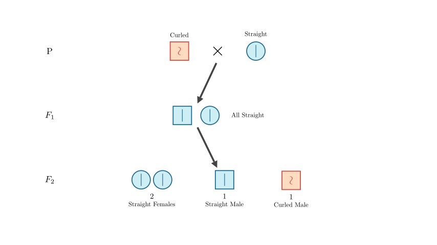
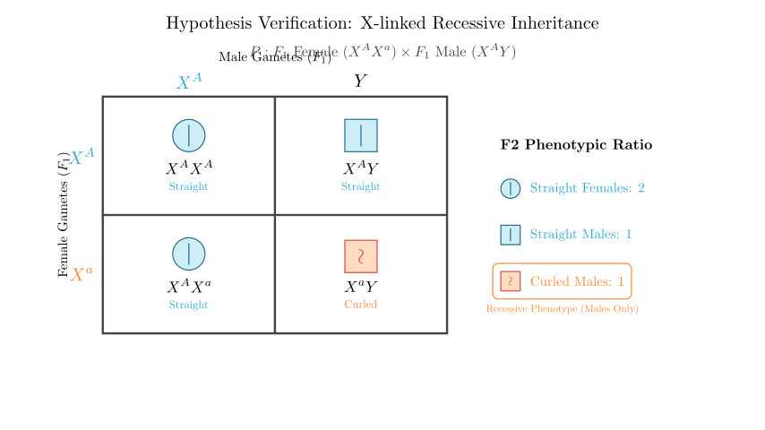
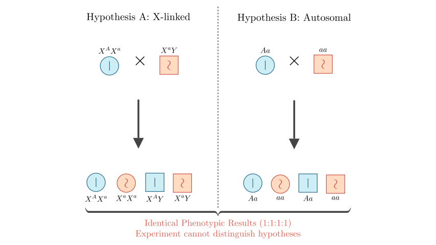
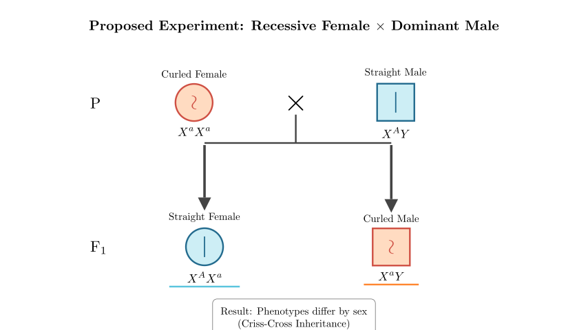

Problem Statement: The hard and long hairs on the body surface of fruit flies are called bristles. In a naturally reproducing population of straight-bristle fruit flies, a single curled-bristle male fruit fly appeared accidentally. Please answer the following questions (alleles are represented by A and a):
Solution Approach: We will analyze the inheritance pattern of the curled-bristle trait using Mendelian genetics. First, we will determine dominance based on the F₁ phenotype. Then, we will analyze the F₂ phenotypic ratio and sex distribution to determine chromosomal location (autosomal vs. X-linked). Finally, we will evaluate the validity of a proposed verification experiment and design a correct one to distinguish between inheritance modes.

Step 1: Analyzing the Origin (Question 1)
The problem asks for an alternative hypothesis to "Dominant mutation on the X chromosome."
In genetics, if a trait appears suddenly in a single individual, it is typically due to a mutation. The alternative to a dominant mutation ($a \rightarrow A$) is a recessive mutation ($A \rightarrow a$).
Since the individual is male, the gene could be on the X chromosome or an autosome. If it were a recessive mutation on the X chromosome, the mother would have produced an egg with the mutated $X^a$ gene (or was a carrier), which the son inherited. This is a biologically plausible alternative.
Answer for ①: A recessive mutation occurred in the gene on the X chromosome in the germ cells of the parent generation (specifically the female parent).
Step 2: Deduce Inheritance Pattern (Question 2)
Now we look at the data from the cross: 1. Dominance: Curled Male $\times$ Straight Female $\rightarrow$ F₁ All Straight. * This indicates that Straight is Dominant (A) and Curled is Recessive (a).
Let's verify with the hypothesis: The gene is recessive and located on the X chromosome. * P: $X^aY$ (Curled Male) $\times$ $X^AX^A$ (Straight Female) * F₁: $X^AX^a$ (Straight Female) and $X^AY$ (Straight Male) $\rightarrow$ Matches "All Straight". * F₁ mating: $X^AX^a \times X^AY$
We can visualize this specific F₁ cross to confirm the F₂ ratios.

Conclusion for Question 2: The Punnett square confirms the theoretical ratio: * Females: $1/2 X^AX^A + 1/2 X^AX^a$ = All Straight (Ratio 2 in total population). * Males: $1/2 X^AY$ (Straight) : $1/2 X^aY$ (Curled) (Ratio 1:1). * Total Ratio: 2 Straight Females : 1 Straight Male : 1 Curled Male.
Answer for ②: The gene controlling the curled bristle trait is a recessive gene located on the X chromosome.
Step 3: Evaluating the Student's Experiment (Question 3)
The student performed a test cross: F₁ Female ($X^AX^a$) $\times$ Curled Male ($X^aY$). The results shown in the diagram are: * Straight Female ($X^AX^a$) : 1 * Straight Male ($X^AY$) : 1 * Curled Female ($X^aX^a$) : 1 * Curled Male ($X^aY$) : 1
We must check if this result is unique to X-linked inheritance. Could Autosomal Recessive inheritance produce the same result?
Let's compare the two scenarios side-by-side.

Analysis of Question 3: As shown in the comparison, both the X-linked recessive hypothesis ($X^AX^a \times X^aY$) and the Autosomal recessive hypothesis ($Aa \times aa$) result in a 1:1 ratio of straight to curled offspring in both males and females.
Because the phenotypic ratios and sex distributions are identical for this specific cross, the experiment cannot distinguish between the gene being on an autosome or the X chromosome.
Answer for ③: No. Because if the gene were located on an autosome (autosomal recessive inheritance), the test cross offspring would also show a ratio of straight bristles : curled bristles = 1 : 1, and there would be no difference between females and males. Thus, it cannot rule out the possibility of the gene being on an autosome.
Step 4: Designing a Valid Experiment (Question 4)
To distinguish X-linked inheritance from autosomal inheritance, we need a cross where the results depend on the sex of the offspring. The most effective method is a Reciprocal Cross or specifically crossing a Recessive Female with a Dominant Male.
Available Materials: * Homozygous Straight Female ($X^AX^A$) * Straight Male ($X^AY$) * Curled Female ($X^aX^a$) * Curled Male ($X^aY$)
Proposed Plan: Cross the Curled-bristle Female with the Straight-bristle Male.
Result: Phenotypes differ by sex.
If Autosomal:
This experiment clearly differentiates the two hypotheses.

Answer for ④: Select Curled-bristle Female and Straight-bristle Male for hybridization (test cross).
Summary: 1. Hypothesis: Recessive mutation on X chromosome. 2. Inheritance: X-linked Recessive (deduced from F₂ sex bias). 3. Verification: The student's cross was invalid because it yields ambiguous results. 4. Design: A cross between a recessive female and a dominant male reveals X-linked inheritance through "criss-cross" transmission (mother to son).